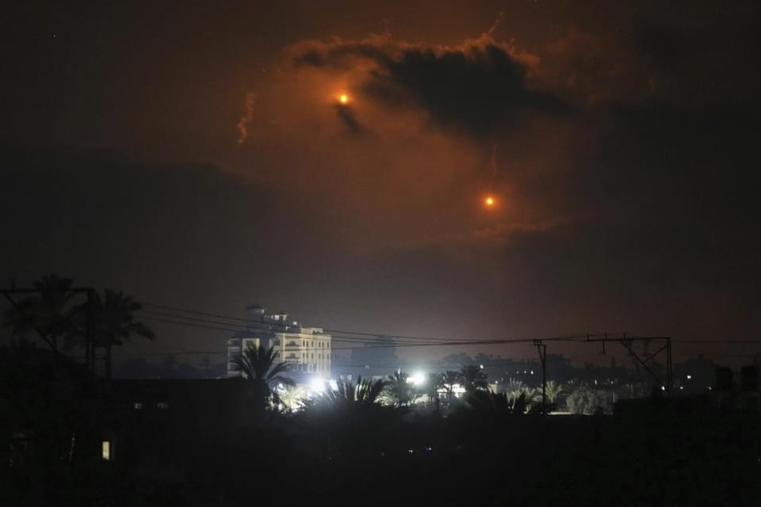

世界苦茶07月22日新闻 | 38条 | 美国AI大基建工程延后

美国AI大基建工程延后 | 昆明献忠事件官方公布伤亡数字 | 京东经营自营外卖 | 特朗普愛珀斯坦醜聞延燒 | 以色列加速加沙攻勢
今日三条新闻分析
苦茶数据
美元兑人民币：7.17（昨日7.18，前日7.17）
美元兑日元：147.75（昨日148.49，前日148.72）
上证指数：3581（昨日3534，前日3434）
标普500指数：6305（昨日6296，前日6297）
比特币：117302（昨日117151，前日118009）
布伦特原油：68.80（昨日69.46，前日69.28）
中国新闻
• 昆明警方通报，7月20日下午的越野车冲撞事件造成2死、4轻伤、5轻微伤，嫌犯被抓获，为49岁本地男子，系“交通肇事逃逸”，排除酒驾毒驾嫌疑。 （翻評：有沒有感覺這次昆明控制的很好，現場流出的照片視頻比珠海少很多。）
• 美专利局员被限出境 ：美国国务院确认，一名以个人身份前往中国的美国专利商标局雇员被中国禁止离境。路透社报道，美国国务院发言人星期一说：“我们正在密切关注此案，并与中国官员积极沟通，争取尽快解决。” 美国专利商标局隶属于美国商务部。此人的姓名以及是否被当局拘留尚未说明。 （翻評：終於敢抓美國的公務人員了，之前抓的美國人都還是普通公民。）
• 中国网民达11.23亿人 ：报告显示，中国网民规模达11.23亿人，互联网普及率达79.7%。据新华社报道，中国互联网络信息中心星期一在北京发布《中国互联网络发展状况统计报告》（简称《报告》）。《报告》显示，截至今年6月，中国网民规模达11.23亿人，互联网普及率达79.7%。今年1月，中国互联网络信息中心发布《报告》显示，截至2024年12月，中国网民规模达11.08亿人，互联网普及率达78.6%。
• 广州冼村旧改清零 ：随着最后两栋村屋在星期天拆除，广州天河冼村旧改迎来历史性时刻，1950栋村屋全部清零。据广州大洋网报道，冼村最后两栋村屋在星期天上午开拆，警戒线外、周边的回迁房阳台上都有大量围观的村民。冼村村民卢凯说：“这一刻，我们等了整整15年。”作为广州天河中央商务区最后一个城中村，冼村改造从2009年开始筹备，2010年正式启动。由于人口密度高、土地资源紧张、地段价格随经济发展一路飙升，再叠加村集体财产问题、宗亲纠葛等情况，改造难度极大。 （翻評：清零這個詞戒不掉了。）
• 欧盟高层将访华会晤习近平 ：中国外交部星期一宣布，欧洲理事会主席科斯塔以及欧盟委员会主席冯德莱恩将于星期四访华，并与中国国家主席习近平会面。据中国外交部官网消息，中国外交部发言人星期一宣布，经中欧双方商定，科斯塔和冯德莱恩将于星期四访华，习近平将会见他们。中国总理李强也将同科斯塔和冯德莱恩共同主持中国—欧盟领导人会晤。此前，彭博社7月初引述消息人士称，科斯塔和冯德莱恩原计划于7月24日在北京与习近平和李强会面，随后于7月25日前往合肥参加商务峰会；但应北京要求，第二天的行程可能取消。
亚太印太新闻
• 韩军赴美参加网安演习 ：韩国国防部星期一说，韩军网络作战司令部将派团赴美，参加由美军主导实施的多国联合网络安全演习。韩联社报道，此次演习代号为“网络旗帜”，是韩军从2022年起连续四年参演。“网络旗帜”将于7月21日至25日在美国弗吉尼亚州举行。韩军网络作战司令部将派遣七名官兵参演，操练对基础设施相关网络攻击的作战流程，并同参演各方共享国安风险因素。
• 韩国发放惠民消费券 ：韩国总统李在明推出的第一项大规模经济提振政策——“惠民消费券”开放申请。韩联社报道，韩国行政安全部从星期一上午9时至9月12日傍晚6时，通过线上、线下方式接受首轮惠民消费券申请。发放金额按个人经济情况和居住等条件不同，每人可领取的数额介于15万至45万韩元。消费券在申请次日即发放，使用期限截至今年11月30日为止。 （翻評：15萬韓元是775元人民幣。）
• 韩国停播对朝广播 ：据消息人士透露，韩国国家情报院本月起全面停止播放对朝广电节目。民间开办的对朝广播电台 “国民统一广播” 代表李光白21日表示，国情院对朝广播电台频道本月以来陆续停播。对朝广播电台 “朝鲜改革广播” 代表金承喆也表示，国情院自上世纪八十年代起播出的广播节目现在已均停播。国情院对朝电视节目近期也暂停播放。分析认为，国情院对朝广播和电视节目向来以突出韩国社会优势、揭露朝鲜体制阴暗面为主要内容，然而全面停播这些广电节目是政府为缓解韩半岛紧张局势而释放的“对朝和解信号”之一。
• 越南因台风进入紧急状态 ：越南总理范明政宣布沿海各省进入紧急状态，以应对台风“韦帕”来袭，并称台风可能引发洪水和山体滑坡。路透社报道，预计台风“韦帕”将于星期二凌晨登陆，各家航空公司已经取消航班。“韦帕”两天前进入南中国海，越南下龙湾突遇雷暴天气，一艘载有至少49人的游船在巨大风浪中翻覆，至今确认有至少35人死亡，四人失踪，10人获救。
• 陈佩琪称柯或遭长期囚禁 ：台湾在野的民众党前主席柯文哲的妻子陈佩琪说，如果大罢免成功，柯文哲会被“关押到死”，并呼吁支持者务必在星期六投下“反对罢免”。陈佩琪星期天在脸书发文说，如果大罢免成功、五院中连立法院的主导权都被民进党拿走，“我的先生柯文哲是永远不会被放出来了，因为绿共会更有恃无恐、把他用莫须有的罪名关押到死”，并呼吁支持者务必在7月26日投下“反对罢免”。 （翻評：這個是法盲加政治盲，如果民進黨是獨裁政治，靠行政權也可以限制司法權，柯文哲可以關到死。如果不是，掌握了立法權也和司法權沒有什麼關係。）
• 孟加拉F7教练机致19死 ：孟加拉国一架F-7 BGI型空军教练机7月21日在首都达卡一所学校坠毁，造成至少19人死亡、164人受伤。军方发言人称，这架飞机起飞后遇到了机械故障，虽然飞行员试图躲开人口稠密地区，但飞机仍撞上了学校建筑。飞行员亦在事故中死亡。事故原因仍在调查。F-7 BGI为中国歼-7系列机型的最后一款，孟加拉国于2011年签署了16架飞机的合同，2013年完成交付。
• 台湾捐款以非法定居点 ：台湾驻以色列代表李雅萍本月造访以色列管理48个约旦河西岸定居点的宾亚敏地区委员会，表态将捐款给舍阿尔宾亚敏的纳纳西医疗中心，捐款数额仍在与有关部门研议。以色列所建的约旦河西岸定居点被联合国和国际刑事法院认定为非法，并受到广泛抵制，这将是国际上首度出现对这些定居点的官方直接捐款。
• 菲电台主持遭枪杀 ：菲律宾又有一名媒体工作者遭枪杀。菲律宾总统媒体安全工作组说，一名电台广播员星期一在菲律宾南部被人开枪打死。路透社63岁，是WOW FM电台的广播员，他同时还主持一档关注社会问题和地方治理的节目。塞戈维亚周一值完早班后，在回家途中被一名身份不明枪手开枪射杀。警方说，两名涉嫌行凶者骑着一辆电单车跟踪塞戈维亚，然后伺机向他下手。
科技新闻
• 海洋热浪频发生生态危机 ：加拿大一项新研究说，受气候变化影响，海洋热浪的发生正变得越来越频繁和强烈，而海洋热浪会对海洋生态系统产生巨大影响。新华社报道，加拿大维多利亚大学研究人员在新一期国际学术出版物《海洋学与海洋生物学年评》中介绍说，2014年至2016年，北美太平洋沿岸海域经历了有记录以来持续时间最长的海洋热浪，海水温度在很长一段时间内高出历史平均水平2至6摄氏度。于是他们分析了大量相关研究和政府报告，以期更全面地了解海洋热浪对海洋生态系统的影响。结果发现，海洋热浪对北美西海岸数千公里的地区造成了前所未有的生态干扰。热浪期间，240种不同物种被发现出现在它们传统地理分布范围以外的区域，其中许多物种的分布比以往更靠北。包括北露脊海豚在内的一些物种甚至出现在它们典型栖息地以北1000多公里的位置。
• ChatGPT日收25亿请求 ：OpenAI 的 ChatGPT 每天收到来自全球用户的25亿条提示词。其中约 3.3 亿条来自美国用户。数据显示，ChatGPT用户每年向该AI聊天机器人发送超过9125亿个请求。这些数字表明OpenAI公司的旗舰产品正变得多么普及。谷歌的母公司Alphabet不发布每日搜索数据，但最近透露，谷歌每年收到 5 万亿次查询，平均每天搜索量接近 140 亿次。尽管如此，ChatGPT 仍显示出令人印象深刻的快速增长。去年十二月，OpenAI 首席执行官萨姆·奥尔特曼表示，用户每天向ChatGPT发送超过十亿次查询。据奥尔特曼称，该公司的搜索量在大约八个月内增长了一倍多。
• 美AI计划遇阻延后 ：白宫公布的一项斥资5000亿美元、旨在大力推动美国AI雄心的计划，难以启动，并且已大幅缩减近期计划。在日本亿万富翁孙正义与萨姆·奥尔特曼和特朗普总统并肩宣布星际之门项目六个月后，负责实现这个项目的新成立的公司尚未完成任何数据中心交易。据知情人士透露，软银和OpenAI在合作的星际之门关键条款上存在分歧，其中包括选址问题，导致负责项目落地的新公司至今未就任何数据中心签署正式协议。虽然两家公司在今年一月份的声明中承诺“立即”投资1000亿美元，但这个项目现在设定了一个更为温和的目标，即在今年年底之前建立一个小型的数据中心，地点可能在俄亥俄州。
• 研究发现72%的美国青少年使用过AI伴侣： 美国一家关注儿童和家庭生活的非营利组织 Common Sense Media 进行的一项新研究发现，绝大多数美国青少年，72%至少尝试过一次人工智能伴侣。研究发现，与人工智能聊天似乎对美国青少年颇具吸引力，因为不仅有近四分之三的青少年尝试过人工智能伴侣，而且有52%表示他们是常规用户。在那些经常与这些伴侣互动的青少年中，13% 每天聊天，21%每周聊天几次。在四分之一表示从未尝试过AI伴侣的青少年中，男孩 也略微比女孩更有可能表示他们从未使用过AI伴侣。该研究使用了1060名青少年作为代表性样本，由美国芝加哥大学 NORC 机构的研究人员进行。
• YouTube删除数千与中俄等国相关宣传频道： 谷歌周一宣布，在第二季度删除了近 1.1 万个与中国、俄罗斯等国的国家宣传活动有关的YouTube频道和其他账户。此次关闭的频道包括7700多个与中国有关的 YouTube 频道。这些活动主要分享中英文内容，宣传中华人民共和国、支持习近平主席并评论美国外交事务。被删除的频道超过2000个与俄罗斯有关，内容使用多种语言，支持俄罗斯并批评乌克兰、北约和西方。谷歌今年第二季度报告还概述了删除与阿塞拜疆、伊朗、土耳其、以色列、罗马尼亚和加纳有关的、被发现针对政治对手的影响力活动。
财经新闻
• 美财长强调协议质量 ：美国财政部长贝森特说，美国政府更关心贸易协议的质量，而不是时间安排。贝森特星期一接受美国消费者新闻与商业频道访问时说：“我们不会为了达成协议而仓促行事。”当被问及是否可以延长最后期限时，贝森特说，美国总统特朗普将做出决定。
• 广东GDP增速低于全国 ：中国广东上半年地区生产总值增长为4.2%，低于全国的5.3%。广东省统计局上星期五发布上半年经济数据，显示广东实现GDP6万8725.4亿元人民币，按不变价格计算，同比增长4.2%，增速比一季度提升0.1个百分点。相比之下，中国国家统计局7月15日发布的数据显示，同期全国GDP录得66.05万亿元，按不变价格计算，同比增长5.3%。
• 中国自印尼煤炭进口下滑 ：中国6月进口自印度尼西亚的煤炭同比下跌30%。据路透社报道，中国海关星期天发布的统计数据显示，中国今年6月进口自印尼的煤炭达1162万公吨，较去年同期下跌三成。今年前六月，中国进口自印尼的煤炭累计达9098万公吨，同比下降12%。
• 电动车厂商被指虚增销量 ：中国电动车品牌极氪和哪吒据报通过提前为车辆投保的方式虚增销量，以达成激进的销售目标。其中，仅哪吒一家公司，就借这种手法虚报逾六万辆汽车的销售数据。路透社查阅的文件显示，这两家公司在车辆尚未实际销售给车主前，就已为它投保。按照中国汽车行业的注册规定，这一操作可让企业将车辆提前计入销量，从而按时完成月度或季度的销售目标。根据哪吒汽车发送给经销商的记录副本，从2023年1月至2024年3月，哪吒通过这种方式提前计入销量的车辆至少达6万4719辆，占公司同期累计报销11万7000辆的一半以上。
• 中国长债价格下跌 ：随着市场对避险资产的需求逐渐减弱，中国长端国债价格在星期一下跌。据彭博社报道，中国30年期国债期货当天一度下跌0.5%，创下六周新低。同时，由于世界最大最贵的水坝工程上星期六在西藏林芝市开工，部分电力和建筑类股票在星期一上涨。
• 京东开首家外卖自营店 ：外卖补贴大战接近尾声，但京东在外卖领域的动作却没有减少。21日，第一财经记者独家了解到，京东旗下名为 “七鲜小厨” 的外卖自营门店已在20日正式开业，这是京东首家外卖自营门店。用户可以在线上下单，采取 “外卖+自提”的模式，但没有堂食。一个多月前，京东创始人刘强东曾在一场沟通会上表示，外卖市场很大，再过一个月之后，京东外卖很快就会出现一个跟美团完全不同的商业模式，也期待这种商业模式能够彻底解决食品安全问题。但对于上述业态模式的具体情况，截至发稿前，京东尚未回复。
• 京东计划3年内在全国建设1万家七鲜小厨： 当地时间周二，京东宣布正式启动“菜品合伙人”招募计划，10亿现金为1000道招牌菜寻找合伙人。合伙人仅需提供菜品配方并合作研发，由七鲜小厨承担现炒制作及品控。据京东介绍，成为合伙人，每道菜立奖 100万保底分成，菜品销量分成上不封顶，品牌餐厅、个体厨师，均可报名。此外，京东将投入百亿资金建设新型供应链，计划三年内在全国建设10000家七鲜小厨。京东首家七鲜小厨外卖自营门店已在20日正式开业，用户可以在线上下单，采取“外卖 + 自提”的模式，但没有堂食。目前，七鲜小厨已经入驻京东外卖频道，商品单价在10元到30元之间。
• 中方批欧制裁中国企业 ：针对欧盟在对俄罗斯实施的新制裁中将多家中国企业列入清单，中国商务部批评，这一举措对中欧经贸关系和金融合作造成严重负面影响，并呼吁欧盟立即停止相关做法。中国商务部星期一在官网以发言人答记者问形式说，欧盟不顾中方多次交涉和反对，一意孤行，在第18轮对俄制裁中继续将部分中国企业列入清单，并以“莫须有”的罪名制裁两家中国金融机构。“中方对此强烈不满、坚决反对。”发言人称，上述举措有违中欧领导人共识精神，对中欧经贸关系和金融合作造成严重负面影响，并敦促欧盟立即停止相关做法。
• 巴西将在中国设立税务咨询办公室 ：巴西财政部表示，巴西将在中国设立税务咨询办公室，两国深化关系之际，此举具有战略重要性。根据路透看到的总统令草案和一些准备文件，巴西将在北京设立新的职位，其中提到双边贸易“日益复杂”，需要加强税收和海关事务方面的合作。巴西财政部否认这与正在进行的贸易战有任何关联。巴西财长称8月1日前或无法与美国达成贸易协议。
俄乌战争
• 俄乌拟再谈判 ：多家俄罗斯媒体引述消息人士的话称，俄罗斯与乌克兰本周举行第三轮直接谈判。塔斯社报道，消息人士透露，俄乌第三轮谈判星期四在土耳其伊斯坦布尔举行，双方代表团可能于23日抵达伊斯坦布尔。俄新社报道，俄乌新一轮谈判将于24日至25日举行。
• 俄展示无人机工厂 ：俄罗斯公开展示自称“全球最大”的无人机工厂，并罕见播出厂区内部的画面，展示工厂正在组装用于对乌克兰发动袭击的致命攻击型无人机。法新社报道，这段长40分钟的视频由俄罗斯国防部旗下电视台Zvezda星期天发布。视频显示，工人们正在组装黑色的三角形攻击型无人机。受到美国制裁的工厂负责人蒂穆尔·沙吉瓦列夫说：“这是全球最大的无人作战飞机生产工厂，也是最秘密的工厂。”
• 乌无人机袭扰俄机场 ：乌克兰无人机星期一大规模袭击俄罗斯，导致莫斯科各大机场陷入混乱，因航班取消或延误，许多机场大排长龙。俄罗斯媒体发布的视频显示，在航空客运量最大的谢列梅捷沃机场出现长长人龙，还有许多乘客睡在地上。俄罗斯国防部说，继前一天击落172架无人机后，周一天亮之前，他们再击落117架无人机，包括出现在莫斯科地区的30架无人机。
国际新闻
• 《华尔街日报》7月17日报道，特朗普曾为杰弗里·爱泼斯坦50岁生日准备了一封贺信，里面包含描绘女性乳房的不雅插画，并在阴毛处写有特朗普签名： 周围则环绕着几行机打文字，并写着“生日快乐，愿每一天都是另一个美妙的秘密”。特朗普在15日受访时否认写了这封贺信或画过这幅画，并威胁《华尔街日报》不得发表报道，否则将起诉。《华尔街日报》报道后，特朗普随即宣布起诉《华尔街日报》两名记者、道琼斯公司、道琼斯公司首席执行官罗伯特·汤姆森、新闻集团以及新闻集团创始人默多克。道琼斯表示对报道的严谨性和准确性充满信心并将积极应诉。白宫21日将《华尔街日报》一名记者从原定随特朗普出行苏格兰的记者名单中除名。白宫新闻秘书表示，由于《华尔街日报》的“虚假和诽谤行为”做出该决定。
• 特朗普政府7月21日公布了马丁·路德·金遇刺案相关档案： 国家情报总监办公室表示，这些文件超过23万页，包括联邦调查局对潜在线索的讨论、记录详细案件进展的内部备忘录、嫌疑人詹姆斯·厄尔·雷的前狱友相关文件等。马丁·路德·金的家人提前收到了公布通知并让自己的团队审查了记录。他两个在世的孩子表示，理解人们对相关记录感兴趣，但敦促人们“带着同理心、克制和对我们家庭持续悲伤的考虑”来处理这些文件。 （翻評：這不是美國人想要公佈的檔案。）
• 以军攻入加沙中部城市 ：以色列军队7月21日首次进入加沙中部城市代尔拜拉赫。以色列20日向当地发出撤离令，被要求撤离的区域传出爆炸声并升起浓烟。当地居民称，以色列在黎明时分命令人们撤离，2个小时后坦克和推土机开进了该地区，并将建筑物夷平。世界卫生组织称，以军突袭了该机构位于代尔拜拉赫的主要员工住所，迫使女性和儿童步行撤离至海岸，男性则被戴上手铐、脱光衣服当场审讯。世卫组织位于当地的主仓库被爆炸和火灾损坏。联合国位于当地的两家旅馆也遭到弹片损坏。以色列尚未置评。代尔拜拉赫是战争期间唯一未发生重大地面行动或遭受广泛破坏的城市。人们猜测哈马斯在当地扣押了大量人质。以色列亦表示占领加沙领土旨在向哈马斯施压，让其释放人质。但人质家属对入侵感到震惊，认为此举是故意危害人质。英国、法国等25个国家发表声明要求立即结束加沙战争。声明批评以色列对人道主义援助的限制，并呼吁哈马斯释放人质。
• 多国促停加沙战争 ：英国和其他20多个国家呼吁立即结束加沙战争，并称以色列政府的援助模式“危险，加剧不稳定，并剥夺加沙人的尊严”。路透社报道，英国、法国、意大利、日本、澳大利亚、加拿大、丹麦等国家的外交部长在星期一发出联合声明说：“我们共同发出一个简单而紧急的信息：加沙战争必须立即结束。”声明说：“我们准备采取进一步行动，支持立即停火，并为以色列人、巴勒斯坦人，以及整个地区开辟一条通往安全与和平的政治道路。”
• 美林火频发人手告急 ：美国今年已发生4万起林火，多名林务局人员批评美国政府进行的联邦机构裁员，导致前线救援人员严重人手不足。路透社采访了10多名在职与退休人员，他们透露近五个月已有约5000人离职，占总人数的15％，导致关键岗位难以填补，甚至被迫承担行政任务。新墨西哥州参议员海因里希批评，美国政府裁减3400名林务局试用员工，其中四分之三拥有可参与救援的红卡。他在7月11日通过电邮声明中说：“野火季已全面展开，但由于政府效率部和特朗普的操作……社区根本无法应对致命野火。”
• 伊俄中将谈伊核问题 ：伊朗外交部发言人巴盖伊说，伊朗、俄罗斯和中国将举行会谈，讨论伊朗的核计划，以及根据联合国“快速恢复”机制重新实施制裁的风险。路透社报道，巴盖伊星期一说，三方会谈将于星期二在德黑兰举行。“我们正在与这些国家持续协调，以阻止或减轻后果。”巴盖伊说，英国、法国和德国缺乏启动这项机制的法律地位。
• 以袭胡塞目标警告德黑兰 ：以色列称，以军袭击也门荷台达港，这是针对胡塞武装的最新一次袭击。法新社报道，以色列国防部长卡茨星期一发声明说，以色列军方“袭击胡塞武装在荷台达港的恐怖目标，并正在强力阻止任何试图恢复先前遭到袭击的恐怖基础设施的行为”。他也说：“也门的命运将与德黑兰相同。”这似乎是指以色列与伊朗之间近期为期12天的战争，以色列当时猛烈打击伊朗的军事和核设施，以及首都德黑兰的多个目标。
• 美国防部高官再离职 ：美国国防部又有一名高级官员离职。《纽约时报》报道，五角大楼星期六晚间宣布，国防部长赫格塞斯的高级顾问富尔彻已经离职，在富尔彻之前，已有多名国防部高级官员先后辞职。富尔彻之前在亿万富豪马斯克领导的“政府效率部”任职，之后成为赫格塞斯的顾问。